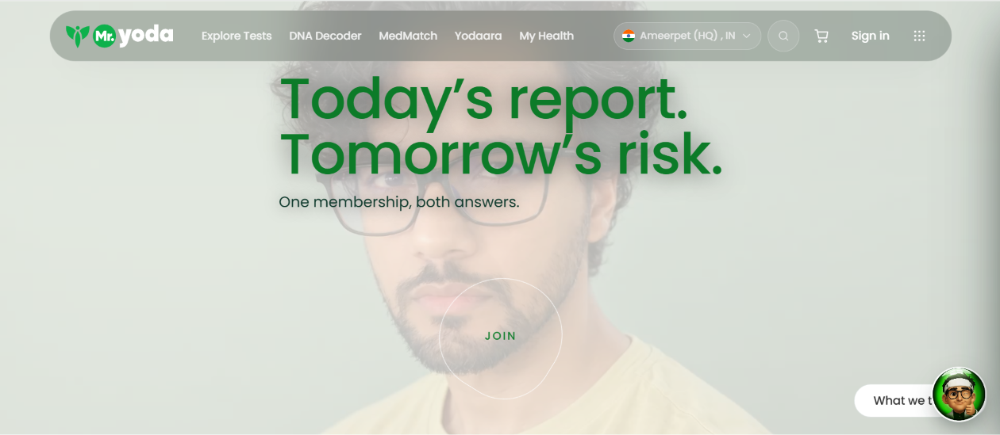
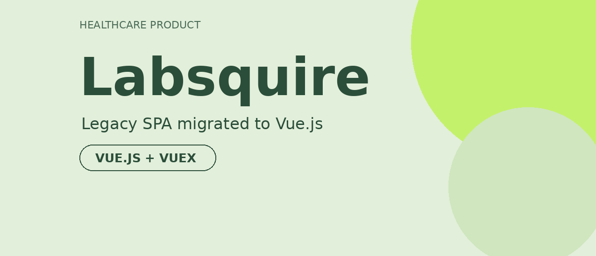

Delivered features and bug fixes for two healthcare web applications across the frontend stack — from reusable UI and state management to server-rendered experiences, accessibility, and performance — and tested my own work with written manual test cases.
Built component-based applications with React, Next.js, Vue.js, and Tailwind CSS.
Implemented UI state, API-connected views, loading experiences, and maintainable component patterns.
Applied SSR, metadata, lazy loading, code splitting, and accessible interaction patterns.

Mr Yoda
Built React and Next.js interfaces and contributed to server-side rendering, metadata, and SEO work as part of the team that reached a 100/100 Lighthouse SEO score. Also tested the AI chat assistant.
Visit product website
Labsquire
Contributed to a Vue.js/Vuex single-page application, developing modular components and improving maintainability. Worked on responsive UI, cross-browser compatibility, and manual testing. My work was on the earlier Labsquire version; the link now opens TestGO.
Visit product website